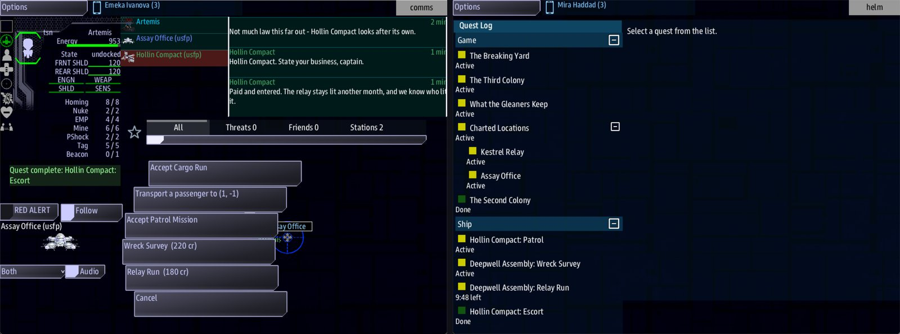

Class 5, Lecture 6 - Jobs¶
What you will have at the end¶
Six kinds of work in The Kestrel Verge, and every one of them can be finished. A patrol that ends when three enemies are gone. A survey that ends when Science scans a dead ship. A run home against the clock. Work that only a trusted crew is offered, and work that pays well and costs the crew their name somewhere else.
The crew takes a job at a station, does it, is paid, and can take it again. That is the difference between a job and the leads you have been writing: a lead happens once, and a job is there every time the crew comes back.

The Assay Office's jobs on Comms, and the three jobs under Ship in the Quest Log.You change two jobs, write three more, and change two Offers: lines. All of it goes in
kestrel_verge.amd.
The video¶
About 7 minutes. Subtitles are available in the player.
Before you start¶
- Your
MyUniversemission as Lecture 5 left it.kestrel_verge.amdmatchesc5-05-the-map\example\. sbs lint MyUniversesaysclean.- The game closed, and the save deleted:
C:\Cosmos\data\missions\common_data\saves\universe_save_the_kestrel_verge_1.yaml.
Words for this lecture:
| Word | Meaning |
|---|---|
| Job | A kind of work, written once, that a side's stations offer again and again |
| Offer | A job on a station's list on Comms, with its pay beside it |
| Ending | The thing that finishes a job. You write it after Done when: |
| Tier | A job's rank, 1 to 3. You met it in Lecture 4 |
Step 1 - The life of a job¶
A job is a quest. You wrote quests all through Class 1, and the lines are the same:
Done when:, Reward:, Fails when:. Two things are different. You do not start a job,
the crew does, by taking it. And when it is done, it can be taken again.
| Stage | What happens |
|---|---|
| Offered | Comms selects a station. The station belongs to a side. Every job after that side's Offers: is a button, with its pay: Escort (250 cr). A job of a tier the crew has not reached is not there |
| Taken | Comms presses the button. The job goes into the Quest Log, under Ship, named for the side: Hollin Compact: Escort |
| Done | Its Done when: comes true, wherever the ship is at the time |
| Paid | The crew gets the credits. The ship's standing with that side goes up by 5 for a tier 1 job, 10 for tier 2, 15 for tier 3 |
| Offered again | The job is back on the station's list, at whatever it pays at the crew's new standing |
The template gave you three jobs. After Lecture 4, only Escort has an ending. Patrol and Salvage can be taken and can never be finished. That is the first thing to fix.
Step 2 - Five endings¶
The line Done when: is an order to the captain, in plain words. The first word decides
what the game watches for.
| You write | The job is done when |
|---|---|
Done when: destroy 3 enemies |
The ship has destroyed three things it is at war with. A foe's station counts as one |
Done when: recover 2 tech |
The ship has picked up two crates of that good. The word is a key from your Goods chapter |
Done when: scan 1 derelict |
Science has scanned one dead ship |
Done when: reach 3, 1 |
The ship arrives in that system |
Done when: dock station |
The ship docks at a station |
The crew never sees this line. The game reads it; the crew reads the job's description, the sentence under the fence. So the order goes there too, in the crew's words.
Open kestrel_verge.amd and find ## [Jobs](jobs). Give Patrol its ending:
### [Patrol](patrol)
---
Tier: 2
Done when: destroy 3 enemies
Reward: 200 credits
---
Sweep a system and clear whatever is hunting in it.
enemies is a word the game knows. It means anything at war with the crew when it is
destroyed: a foe's ships, raiders, a foe's station. If the crew buys a ceasefire, that
side's ships stop counting.
Now Salvage. Give it an ending, and one more thing in its reward:
### [Salvage](salvage)
---
Done when: recover 2 tech
Reward: 150 credits, earns hollin selfish 20
---
Recover what is worth recovering, and do not ask where it came from.
earns hollin selfish 20 is a deed, the same three words you wrote in a hail answer in
Lecture 4: a side's key, a trait, a number. Here it is part of a job's reward. Salvage is
the Gleaners' job, and it pays in credits and in standing with the Gleaners. But the
Compact hears who has been stripping wrecks, and thinks less of the crew for it.
That is the one way to make a job matter to a side that did not offer it. The items of a reward are separated by commas.
Step 3 - Three more jobs¶
Add these under Salvage, with an empty line between records.
### [Wreck Survey](survey)
---
Done when: scan 1 derelict
Reward: 220 credits
---
 The Assay Office, Deepwell Assembly
The Assembly wants every dead hull in the Verge on its books. Find one and scan it.
A scan is all they ask. What she was, who flew her and what she carried go into the ledger, and the ledger is how the Assembly decides what anything is worth.
### [Relay Run](relay_run)
---
Done when: reach 0, 0
Fails when: 10 minutes
Reward: 180 credits
Penalty: 60 credits
---
Sealed tallies for Kestrel Relay. Carry them home and the Assembly pays on arrival.
 Ten minutes, from the moment you take them.
Late tallies are worth nothing. Miss the ten minutes and the Assembly bills you for the broken seals.
### [Clear the Lanes](strike)
---
Tier: 3
Done when: destroy 6 enemies
Reward: 600 credits
---
The Compact does not ask this of strangers. Six hulls, and the lanes stay open a season.
-  Six hulls that hunt the lanes
-  The Compact's trust, which is worth more than the pay
Freight moves when the lanes are quiet, and Hollin eats when the freight moves.
| Line | What it means |
|---|---|
### [Wreck Survey](survey) |
The name on the button and in the Quest Log, then the key. The key is what goes after Offers: |
Fails when: 10 minutes |
The job fails ten minutes after it is taken. You know this line from Class 1 |
Penalty: 60 credits |
What a failed job costs the crew. Written like a reward |
Tier: 3 |
Offered only to a ship whose standing with that side is 50 or more |
| The text below the fence | The job's briefing. The crew reads it in the Quest Log, once they have taken the job |
Relay Run does a second thing for you. It ends at 0, 0, so it is a way home that pays.
A job's text is a page, read after the crew says yes. Before the job is taken, the crew sees only its button: the name and the pay, Wreck Survey (220 cr). Once it is taken, selecting it in the Quest Log shows everything under the fence, laid out the way a quest's description is in Class 1, Lecture 8: lines one under another run together into one paragraph, and an empty line starts the next. So the first paragraph is the order, and the rest is why it matters.
A picture can start a line, with the words beside it, as the face did in Class 2. Two kinds are new here:
| You type | The Quest Log draws |
|---|---|
 The Assay Office, Deepwell Assembly |
A picture of the station, with the words beside it. starbase_industry is the model the Assay Office's Art: line names, so the crew sees the station that is paying |
 Ten minutes, from the moment you take them. |
A small hourglass, one line tall, and the words beside it |
-  Six hulls that hunt the lanes |
A list item whose bullet is the icon |
The word after icon:// must be one of the game's icon names: hourglass, crosshair,
handshake, flag, skull, shield, person and wrench are a few. An icon name
the game does not have draws nothing. Lint checks both names, and warns about an icon or
a model it does not know. Copy them from this page all the same.
Step 4 - Put them on offer¶
A job nobody offers is never seen. Find ## [Sides](sides).
In Hollin Compact, change the Offers: line to:
In Deepwell Assembly, change it to:
The Deepwell used to offer Escort. Escort ends at 3, 1, which is their own home, so at
the Assay Office it was a job to go where the crew already was. A job that ends at a
place belongs to a side that lives somewhere else.
The Gleaners keep Offers: salvage.
Step 5 - Check it¶
Save the file.
Each row below was made on purpose, one change to the finished file, then linted, then played.
Mistakes lint finds
| The mistake | What the game does | What lint says |
|---|---|---|
The first word misspelled: Done when: destory 3 enemies |
The job can be taken. It never finishes | A warning: "destory 3 enemies is not something the game can watch for, so this quest has no way to finish" (unknown-trigger) |
Done wen: |
The same | A warning: "Did you mean Done when?" (unknown-field) |
The colon left off: Done when destroy 3 enemies |
The same | An error: "expected "Label: value"" (fence-syntax) |
Two Done when: lines in one job |
The second one is the ending | A warning: "Done when: is written twice in this fence" (repeated-field) |
Rewrad: |
The button reads (0 cr) and the job pays nothing | A warning: "Did you mean Reward?" (unknown-field) |
| Two jobs with the same key | The second is never offered | A warning: "survey is the key of 2 records in the same place" (duplicate-key) |
No comma before earns: Reward: 150 credits earns hollin selfish 20 |
Pays the 150. The deed does not happen | A warning: "has earns in the middle of it, so the earns is not read and no standing moves. Put a comma before earns" (earns-shape) |
| A job with two hashes | That job, and every job under it in the chapter, is never offered | A warning on each of their lines: "this record is being read as a map" (unknown-field) |
## [Jobs](work) |
No station offers any work | The same warning, on every line of every job |
An icon name misspelled: icon://hourglas |
No hourglass is drawn | A warning: "icon://hourglas is not an icon name" (embed-unknown-icon) |
Mistakes lint cannot see
Lint says clean for every one of these.
| The mistake | What the game does |
|---|---|
No Done when: line |
The job is taken and never finishes |
A number in words: destroy three enemies |
Never finishes |
No number: destroy enemies |
One kill finishes it |
A side's key that ends in s: destroy 3 gleaners |
Never finishes. The game takes the s off and looks for gleaner. Write enemies |
A good that is not in your Goods chapter: recover 2 gizmos |
Never finishes |
dock at a station |
Never finishes. Write dock station |
No comma in a place: reach 0 0 |
Never finishes, and Engage will not fly to it |
A word for a place: reach home |
The same |
Reward: 180, with no credits |
The button reads (0 cr) and the job pays nothing |
Reward: one hundred eighty credits |
The same |
Standing: hollin selfish 20 on a job |
Nothing. On a job, write the deed in the reward |
A word after Offers: that is not a job's key: survey, relay |
That job is never offered |
A job's name after Offers: where its key should be: Wreck Survey, Relay Run |
Neither is offered |
No comma after Offers:: survey relay_run |
Neither is offered |
| A job that no side offers | Never seen |
| A job with four hashes | Never offered |
A space in a job's key: (relay run) |
Never offered |
Tier: 0 |
Offered to everybody, and finishing it earns no standing |
Tier: high |
The mission stops working when Comms selects a station. Lecture 4 has this row too |
Accept On: coms |
Taken on Comms as usual. Then no window can give it up |
So check these by eye:
- Every job has a
Done when:line, and it starts with one of the five words in Step 2. - A number is written in figures, and a place is two numbers with a comma.
- After
destroy:enemies. Afterrecover: a key from your Goods chapter. - Every
Reward:has a number and the wordcredits, and a comma before eachearns. - Every word after an
Offers:is the key of a job, and every job is after somebody'sOffers:. - Every name after
ship://is copied from this page, letter for letter.
Step 6 - Play it¶
At home.
- In the
commswindow, select Hollin Compact. It offers Escort (250 cr). Patrol and Clear the Lanes are not there: the ship's standing is 0. - Press Hail Hollin Compact, then Pay the relay levy. Select the station again. Patrol (240 cr) is there, and Escort reads Escort (300 cr).
- Press both. In the
helmwindow, open the Quest Log. Under Ship are Hollin Compact: Patrol and Hollin Compact: Escort. - Select Patrol and press Engage. The ship stays where it is. A patrol has no place to fly to. There is nothing to shoot in the Hollin Fields either, so it waits.
- Select Escort and press Engage. On arrival at 3, 1 it is done. It pays 300.
At the Assay Office.
- On Comms, select Assay Office. As in Lecture 5, it is far out: engage it under Charted Locations first, and scan it on Science. It offers Wreck Survey (220 cr) and Relay Run (180 cr). Press both. The Relay Run's ten minutes have started.
- On Helm, engage The Third Colony. The Tern is a dead ship, and so is any wreck the
game scattered:
scan 1 derelictcounts whichever one Science scans first. On Science, the Terrain button lists them. When one is scanned, the survey is done, and pays 220.
In the Breakers.
- Engage The Breaking Yard. Destroy three of what is there. The patrol is done, and pays 240. The ship's standing with Hollin is now 35.
- On Comms, select the Gleaners' station, press Hail The Gleaners, and give the bold answer. Select the station again: Salvage (180 cr) is on offer. Take it.
- Pick up two crates of tech. Salvage is done, and pays 180. The ship's standing with Hollin has dropped from 35 to 26. That is the deed in Salvage's reward.
Home again.
- Engage Deepwell Assembly: Relay Run. On arrival at 0, 0 it is done, and pays 180.
- Select Hollin Compact. Patrol and Escort are on offer again, at Patrol (252 cr) and Escort (315 cr). Take Patrol. It is in the Quest Log again, not done.
What you need to know about jobs
| Fact | What it means for your story |
|---|---|
| A job can be taken again as soon as it is done | Every job is a way to earn standing for as long as the crew cares to. Ten patrols take a ship from 0 to 100 with Hollin. If a side should be hard to win, give it few jobs, or jobs that are hard to do |
| The pay on the button is the pay at today's standing | 1 percent more for each point, as in Lecture 4. The crew sees a side warming to them as a number on a button |
Helm's Engage flies only to a reach job |
For any other job the crew has to find the place themselves. Put a lead, or a landmark the crew has charted, near where the work can be done |
| A job is done wherever its ending comes true | A patrol taken from Hollin is finished in the Breakers. The crew does not go back to be paid |
| A station sells its side's jobs, and nobody else's | A landmark station with a Side: offers that side's work. Kestrel Relay belongs to the crew's own navy, and offers none of yours |
| The game adds buttons of its own to every station | Accept Cargo Run, Transport a passenger and Accept Patrol Mission are the game's. That last one is not your Patrol |
| A big count of kills grows with the game's difficulty | A count of 3 or more is the count at difficulty 5. At a higher setting on the start screen the crew is asked for more |
| Comms takes a job and gives it up. Helm engages it | Accept On: helm in a job moves giving it up to Helm. Engage On: comms moves Engage to Comms. Most jobs need neither line |
If something goes wrong¶
| What you see | Likely cause |
|---|---|
| A job is taken and never finishes | It has no Done when:, or the line starts with a word the game does not know, or its number is in words |
| A patrol never counts a kill | The word after the number is not enemies. Or the crew has a ceasefire with the side it is shooting |
| A station offers fewer jobs than you wrote | A word after Offers: is not a job's key, or the job's tier is above the crew's standing |
| A button reads (0 cr) | The Reward: has no number, or no word credits |
| Engage does nothing | The job is not a reach job. Or its place has no comma in it |
| Salvage never finishes | There are not two crates of tech where the crew is looking. Tech is rare: its Weight: is 10. Try another system |
| The Relay Run failed, and 60 credits went | More than ten minutes passed between taking it and arriving home |
| The mission stops working when Comms selects a station | A Tier: that is not a number. Read mast.runtime.log |
| A picture is missing from a job's briefing | The name after icon:// or ship:// is not one the game has. Copy it again from this page |
Exercise¶
- Write one job for each of your sides that only that side would offer. Say out loud why.
- Give one of them
Tier: 2, and make its text read like work for a crew that is trusted. Give it two paragraphs: the order, then why it matters. - Write a job that pays well and costs standing with another side. Decide which side hears about it, and which trait they would hold against the crew.
- Write one job against the clock. Play it, and let it fail once.
- Take one job three times running. What does it pay the third time? What is the ship's standing with that side?
Checkpoint¶
You are done when all five are true:
sbs lint MyUniversesaysclean.- Every job the crew can take can be finished.
- A tier 2 job is missing from a station's list at standing 0, and there at 20.
- One job changes the ship's standing with a side that did not offer it.
- A finished job is on offer again.
Next¶
Lecture 7 gives the sandbox a spine: story chapters that open one after another, a conversation that closes one of them, and an ending for the whole game.
Further reading¶
- "Jobs - the work they offer" in the Open Universe writer's walkthrough. Two notes on
it: it writes
Goal:andPays:, which are older spellings ofDone when:andReward:, and both still work. jobs.amdin the Open Universe mission: twelve jobs in three tiers to compare with yours.- Class 1, Lecture 9, "Chains and trees":
Fails when:in full.
Download this lecture's finished files (a zip of its example folder).